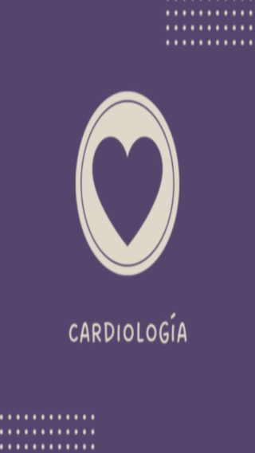
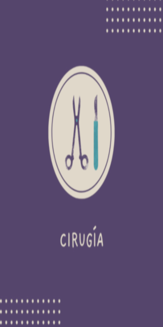
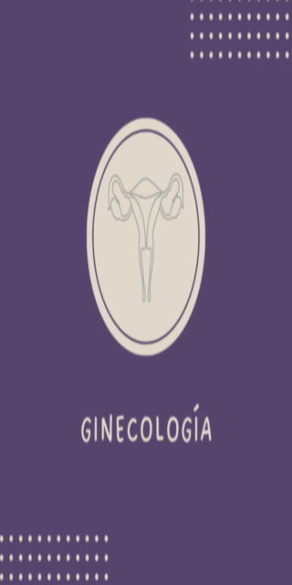
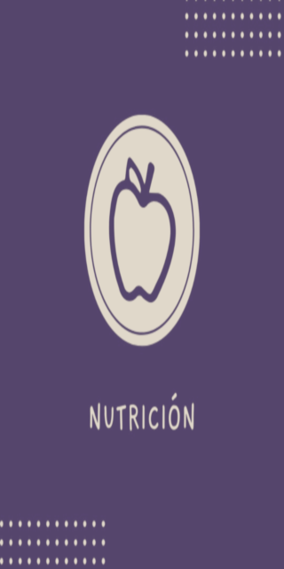

Controles períódicos, hipertensión y arritmia, MAPA, presurometría, ergometría, Holter, estudios prequirúrgicos

Cirugía clínica, estética y general
Diabetología, tratamiento y control de tiroides y Osteoporosis

Controles períodicos, colposcopía, tratamiento de ITS y asesoramiento en métodos anticonceptivos
